-
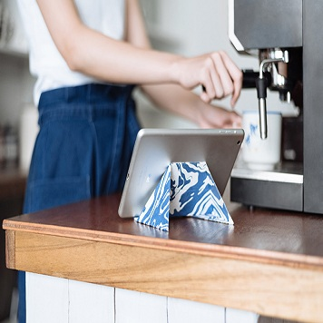
薄如纸片，却连iPad也撑得起来的折纸支架
这是一款使用环保PVC和PC制作的手机支架，在摊开状态下，它只有1毫米的厚度，重量仅有40克。
但把它折叠成支架状态后，坚韧耐用的材质却可以最大承重20公斤，别说手机、即使是平板和笔记本电脑也轻松支起来。 -
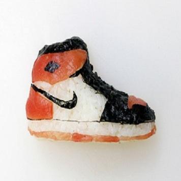
让工作成为一门艺术：把寿司做成鞋
Yujia Hu 是一位出生在意大利的中国人，现年28岁，日常工作中，他是意大利米兰一间家族寿司店的寿司师傅和传人。但在工作之余，他又是一位热爱体育和NBA的球迷。因此尽管家族生意需要花费他巨大的心力和时间，他仍然想通过一些别的方式来表达自己的“激情”，比如艺术。
-
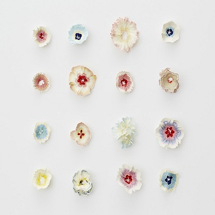
铅笔屑这么微不足道，但它也有华丽绽放的时候
削铅笔也是件微不足道之事，但记得还在学校的时候，就是这样一件小事，也会有许多同学以无比认真的态度去对待。
足够长又足够完整的铅笔屑看起来就像鲜花的花瓣一般美丽，所以我们有时也把铅笔屑叫做铅笔花。 -
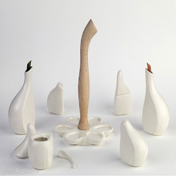
Ajorí蒜形调味瓶
Ajorí蒜形调味瓶的设计是从大蒜的鳞茎形态上得到灵感，它由一个托盘和六个调味瓶罐组成，可盛放多种液体和固体调料 ，足以适应各个地区 、国家不同的烹饪传统；优雅的整体设计，使得它仿佛美丽的雕塑作品，在实用之余也是很好的装饰品 。
-
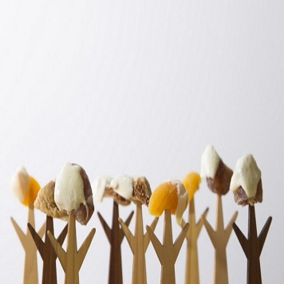
Mogu Mogu木制食叉
Mogu Mogu是一个模拟饮食声音的拟声词，叉子的形状则是极简的树木形状，并配备了托盘，当叉子上都叉满食物的时候，就仿佛一片小小的食物森林。
-
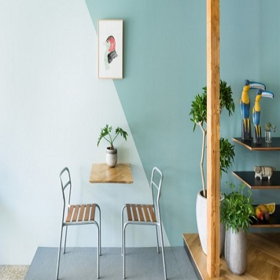
『店，好店』：像家一般的「Snow Picnic」冰激凌店
Snow Picnic 是一家位于日本东京中野区的冰激凌店，这里出售的冰激凌都采用液态氮现场制作，使冰激凌不仅满足味觉、亦带来视觉上的享受.
柔和的墙壁色彩、搭配温馨的沙发各类家具、以及令人舒适放松的绿色植物，共同营建出了「家」一般的感觉。 -
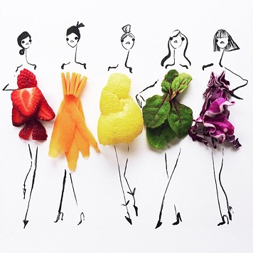
在时尚时装中占据一席之地的蔬果食品
艺术家用简单的笔画勾勒出简洁的纸上模特 ，将丰富多彩的各种食物想像成时尚时装，作为点晴之笔装点其中，让看似潦草的插图瞬间巧妙变为鲜活俏皮的时装插图。
绿叶蔬菜、面包片、樱桃、香蕉皮、洋葱……菜市场上原本与时尚、或时装八杆子打不着的食物在这里骚首弄姿 ，不仅恰如其当的反映出人体的各种角度与优美曲线，更让人轻松联想到丰盈、匀称、潮流的时尚服装。 -
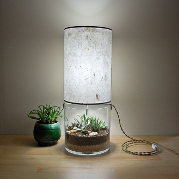
极简主义的几何台灯、也是干净独特的现代花器
这个独特的台灯采用了极简的几何形状，用冷轧钢板焊接成多种形状的灯罩架子，再覆盖上纯手工打造的纸张，组成有复古之风的米色灯罩。
台灯底部也别出心裁的加入了一个同是几何形状的透明玻璃容器作为底座。这个元素的加入，使得仅有复古之风的灯罩就有了现代气息，整体看起来简单、干净，十足的极简主义。 -
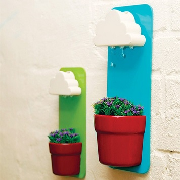
云雨花盆
云雨花盆是集壁挂式花盆以及云形洒水器于一体的设计，它简单易用，是一款非常赞的室内产品。
云雨花盆模拟了简单的自然场景 ，使浇灌过程充满了趣味，有助于我们给孩子们灌输关于自然生态环境的认识 -
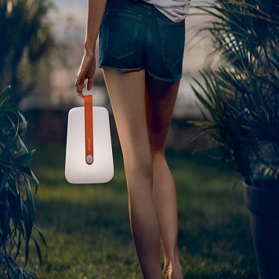
简约现代的两用灯笼灯
这款户外灯具赋予了现代而圆润的外形，它不仅是照明灯具，也是简约的装饰物，既适合花园、阳台、外出露营使用，也同样适合室内空间。有两种不同大小的尺寸、两种别致的落地挂杆可供选择。
因为是充电式的设计，所以它就像个灯笼一般，既可以作为落地灯用，也可以随手提着到处走。 -
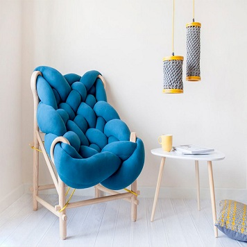
好大一麻花，舒适编织座椅
眼前这个矮矮胖胖的针织座椅，综合了传统技术、时尚和当代审美，希望用俏皮的用色和大胆的造型为温馨的家居生活添砖加瓦。
特别设计的木制框架、巨型的定制“麻花”利用螺纹打结的方式固定，既独特、又营造了足够的舒适，底部相互交叉的黄绳是一个彰显细节的地方，它是一道亮眼的色彩，也有支托坐垫的功用。 -
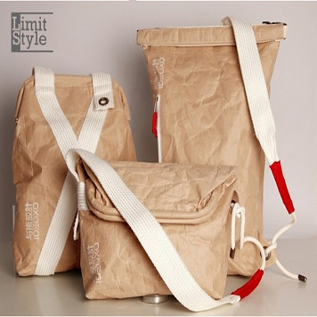
水泥沙袋背包
泥沙袋具有防水、耐磨、承重、放在地上又拖又拉也不容易坏等优良特性，可以将其作为时尚和新潮背包的材料.
大地色系配上米白色的麻布背带，让每个包男女皆宜、且能轻松搭配各种穿衣风络，包包上的皱褶带出朴实、粗犷、不矫揉造作的生活味道。
大家正在关注
为您推荐